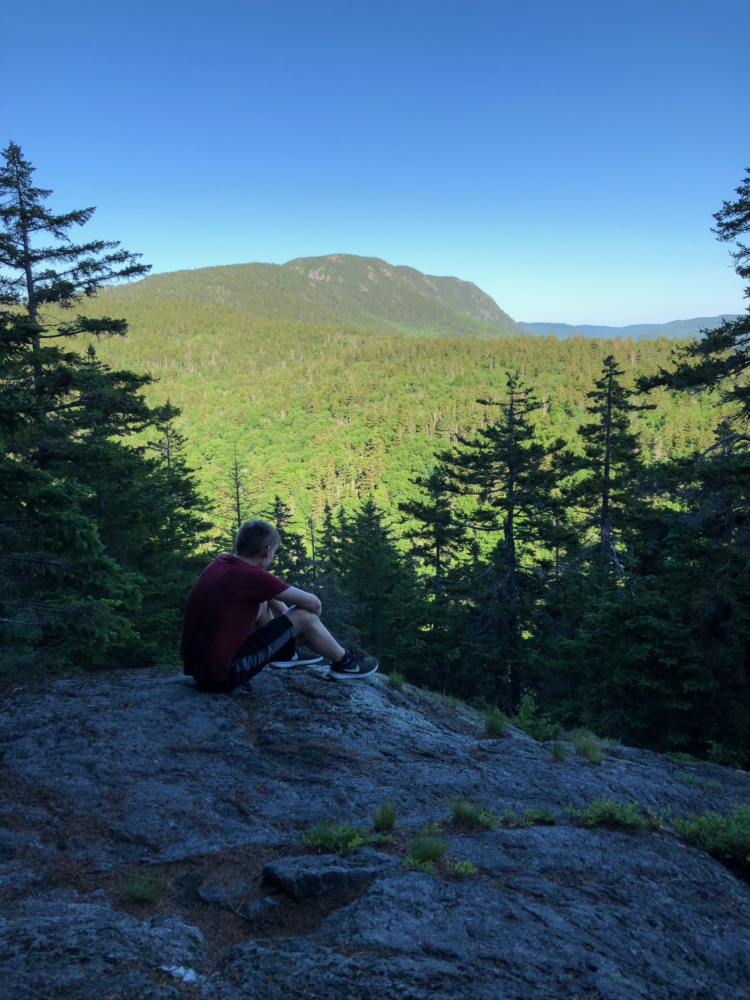

I was born in Kazakhstan and lived there until I was two. At two I was adopted by my parents, who brought me to Maine and here I have lived for the past 16 years.
Some of my favorite hobbies include playing soccer which, I have played since pre-school. Playing music, the alto saxophone whcich I have been playing since the fifth grade. Lastly I enjoy being outside and getting to take hikes and just enjoy nature.

I am no doubt a dog lover; This is my cousins puppy they just got.